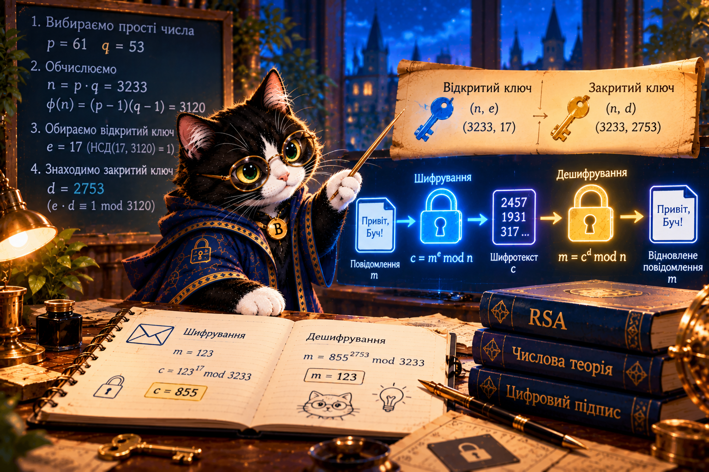

RSA — два ключі до повідомлення
Чому відкритим ключем можна зашифрувати повідомлення, а розшифрувати — тільки відповідним закритим?
Буч відкриває пошту двох ключів. Спробуйте самі створити ключі, надіслати число й дослідити слабкості навчального RSA.

Маршрут місії
▶ Навчальне відео 🤖 Веббот Практика 1 Практика 2 Практика 3 Практика 4 📝 Форма відповідейПроблема Буча
Буч публікує відкритий ключ (n, e). Кожен може зашифрувати для нього число. Але закритий ключ (n, d) зберігає лише Буч. RSA відрізняється від AES і ChaCha20, де обидві сторони використовують спільний секрет.
Діффі—Геллман (2.11) узгоджує спільний секрет. RSA може використовуватися для шифрування або підпису, але це різні стандартизовані схеми.
Ручний приклад — збудуємо два ключі
7 × 23 = 161 ≡ 1 (mod 160). Відкритий ключ (187, 7), закритий (187, 23).
Повідомлення m = 9 → c = 9⁷ mod 187 = 70 → 70²³ mod 187 = 9.
Числа навмисно малі. Такі ключі легко зламати. Для реального шифрування потрібні перевірені бібліотеки та RSA-OAEP або сучасні гібридні протоколи.
Мінісимулятор RSA
Чотири практики
Python для самоперевірки
p, q = 11, 17 n = p * q phi = (p-1) * (q-1) e, d = 7, 23 m = 9 c = pow(m, e, n) print(c, pow(c, d, n)) # 70 9
Компетентнісне запитання: чому шкільна редакція не повинна використовувати саморобний RSA з двоцифрових простих чисел для конфіденційних повідомлень?